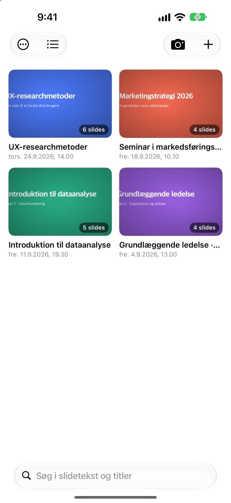
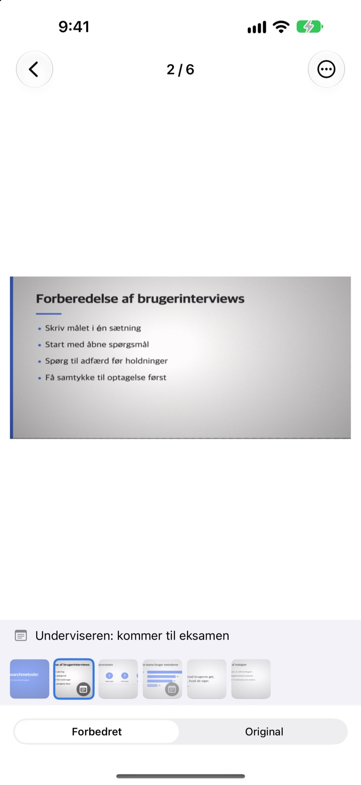
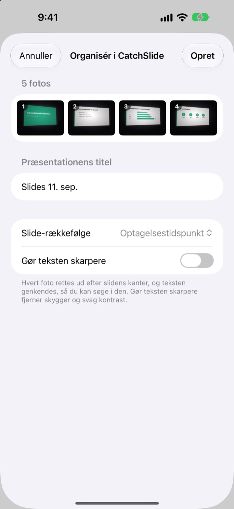
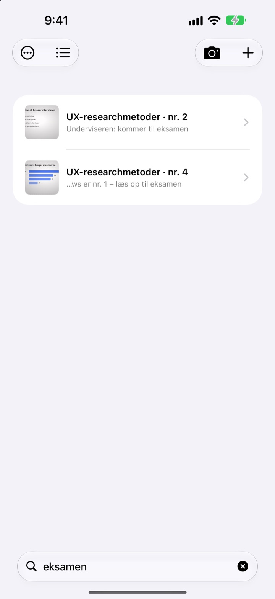

Taget fra siden.
Gemt forfra.
Kameraet finder alle fire hjørner af sliden, retter den op og skærer rummet omkring væk. Slides, du tager i træk, havner i samme præsentation.
Ét køb, alle funktioner. Intet abonnement og ingen konto.

Ret den op selv
Billedet er taget skævt fra en sideplads i auditoriet. Den grønne kant viser, hvor slidens hjørner blev fundet.
Har du åbnet kamerarullen for at læse op og ikke kunnet finde sliden?
Slides fra bageste række bliver altid skæve og drukner mellem selfies og kvitteringer. I et stille auditorium er lukkerlyden alene nok til at holde dig tilbage. CatchSlide tager billeder uden lyd, retter hver slide op og holder dem samlet efter præsentation.
Lige i samme øjeblik
Kameraet følger slidens fire hjørner live og bliver grønt, når det har dem. Selv taget skævt bliver sliden rettet op, som var den taget forfra, og baggrunden skæres væk.
Ingen lukkerlyd. Slå Automatisk optagelse til, så tager appen hver ny slide af sig selv og springer slørede billeder over.

Billeder, du allerede har, på én gang
Vælg flere billeder fra forelæsningen i Fotos, og del dem med CatchSlide. De bliver rettet op og gemt som én præsentation i den rækkefølge, du tog dem.Gør teksten skarpere fjerner skygger og mat kontrast.

Ét ord er nok
CatchSlide læser teksten på hver slide direkte på din enhed. Selv uger senere fører et enkelt ord dig tilbage til den rigtige slide.
Noter på dine slides kan også søges frem. Skriv eksamen på nogle af dem, og hele pensum er én søgning væk.

Kom i gang på tre trin
- 1
Åbn kameraet
Fra kameraknappen i listen, widgetten på hjemmeskærmen eller låseskærmen.
- 2
Få sliden i billedet
Når hjørnerne bliver grønne, tager du billedet, eller du lader automatisk optagelse gøre det.
- 3
Læs op efter præsentation
Søg, tilføj noter, og eksportér en PDF at læse op på.
Det kan du med en præsentation
- Optagelse
- Optag lyd, mens du tager billeder, og afspil hver slide fra det øjeblik, du tog den
- Transskription
- Gør optagelsen til tekst, viser hvad der blev sagt til hver slide og indgår i søgningen
- AI-resumé
- Opsummerer præsentationen ud fra slidetekst og transskription (iOS 26 eller nyere på enheder med Apple Intelligence)
- Læsemateriale med en, to eller fire slides pr. side
- Markdown
- En .zip klar til Notion eller Obsidian
- PowerPoint
- Eksportér en .pptx med transskriptionen i talernoterne
- Flet
- Vælg flere præsentationer, og saml dem til én
- iCloud-synkronisering
- Slå til for at se dine præsentationer på andre enheder med samme Apple ID. Slået fra fra start
- Widgets
- Åbner kameraet direkte fra hjemmeskærmen eller låseskærmen
Tekstgenkendelse, transskription og AI-resuméer sker på din enhed.
Køb én gang, få det hele
CatchSlide
- Lydløse billeder, automatisk optagelse og opretning
- Import af flere billeder ad gangen fra Fotos
- Slides samlet efter præsentation, søgning i tekst og noter
- Optagelse, transskription og AI-resumé
- Eksport til PDF, Markdown og PowerPoint
- iCloud-synkronisering og widgets
Drikkepenge (valgfrit)
- Hvis appen hjælper dig, kan du give udvikleren lidt drikkepenge
- Drikkepenge låser ikke noget op. Alle funktioner virker uden
Du finder det under Mine oplysninger.
Intet abonnement og ingen betaling for ekstra funktioner. Se prisen i dit land i App Store.
Ofte stillede spørgsmål
Hvordan tager jeg et billede af en slide?
Åbn kameraet, og ret det mod sliden. Når hjørnerne bliver grønne, trykker du på udløseren. Med automatisk optagelse slået til tager appen selv næste slide, hver gang den skifter.
Siger den lukkerlyd?
Nej. Billedet gemmes direkte fra kameraet, så det er lydløst i alle lande.
Hvorfor er mine billeder samlet i én præsentation?
Tager du næste billede inden for 5 minutter efter det forrige, hører det til samme præsentation. Tryk på titlen i listen for at omdøbe den, og brug Flet præsentationer til at samle dem, der er blevet delt op.
Kan jeg tilføje billeder, jeg allerede har taget?
Ja. Vælg dem i Fotos, og del dem med CatchSlide, eller tryk på ＋ i listen og vælg Importér fra Fotos. De rettes op og gemmes som én præsentation i den rækkefølge, de blev taget.
Hjørnerne blev fundet forkert.
Åbn sliden, vælg Juster hjørner i menuen ⋯, og træk de fire hjørner på plads. Registrér automatisk finder dem igen, og Hele billedet bruger hele fotoet. Originalen gemmes altid, så du kan gøre det om når som helst.
Kan jeg søge i teksten på mine slides?
Skriv et ord i søgefeltet øverst i listen. Der søges i slidetekst, titler, noter og transskriptioner, og du hopper direkte til sliden. Tekstgenkendelsen sker på din enhed.
Hvordan eksporterer jeg en PDF?
Åbn delingsmenuen i en præsentation, vælg Eksportér som PDF, og vælg en, to eller fire slides pr. side. Fra delingsarket kan du gemme den i Filer eller sende den til en anden app.
Hvordan ændrer jeg rækkefølgen eller sletter slides?
Hold fingeren på en slide i en præsentation, og træk den. I samme menu kan du slette eller dele en slide, og med Vælg sletter du flere på én gang.
Hvordan virker optagelse og AI-resumé?
Slå Optag til øverst i kameraet, så gemmer hver slide lyden fra det øjeblik. Under Præsentationsnoter laver Resumér med AI et resumé ud fra slidetekst og transskription. Det kræver iOS 26 eller nyere på en enhed med Apple Intelligence.
Hvor gemmes mine slides og optagelser?
På din enhed. De kommer kun op i din egen iCloud, hvis du slår Synkronisering til under Mine oplysninger, og du behøver ingen konto. Læs mere i privatlivspolitikken.
Spørgsmål, fejl eller idéer? Skriv til leeo@kakao.com.